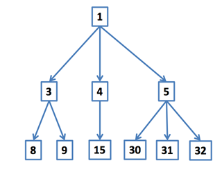

증가하는 정수 수열을 이용해서 트리를 만드는 방법은 다음과 같다.
예를 들어, 수열 1 3 4 5 8 9 15 30 31 32를 위의 규칙을 이용해 트리를 만들면 아래 그림과 같이 된다.

두 노드의 부모는 다르지만, 두 부모가 형제(sibling)일 때 두 노드를 사촌이라고 한다.
수열 특정 노드 번호 k가 주어졌을 때, k의 사촌의 수를 구하는 프로그램을 작성하시오.
입력은 여러 개의 테스트 케이스로 이루어져 있다. 각 테스트 케이스의 첫째 줄에는 노드의 수 n과 사촌의 수를 구해야 하는 노드의 번호 k가 주어진다. (1 ≤ n ≤ 1,000, 1 ≤ k ≤ 1,000,000) 다음 줄에는 총 n개의 수가 주어지며, 모든 수는 1보다 크거나 같고, 1,000,000보다 작거나 같다. 입력으로 주어지는 수열은 항상 증가한다. k는 항상 수열에 포함되는 수이다.
입력의 마지막 줄에는 0이 두 개 주어진다.
각 테스트 케이스 마다, k의 사촌의 수를 출력한다.
Input:
10 15
1 3 4 5 8 9 15 30 31 32
12 9
3 5 6 8 9 10 13 15 16 22 23 25
10 4
1 3 4 5 8 9 15 30 31 32
0 0
Output:
5
1
0